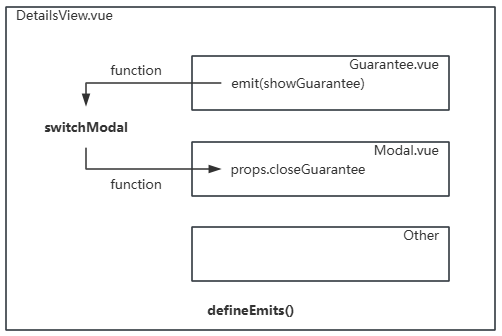

<button @click="handleSuper">click me</button>
// 声明自定义事件
const emit = defineEmits(['emitSuper', 'emitHi'])
// 使用1：上来就传递自定义事件；或在onmounted() 中传递
emit('emitHi', 'hi,there.')
onMounted(() => {
emit('emitHi', 'hi,there.')
})
// 使用2：在单击事件中传递自定义事件
// 使用具名函数
const handleSuper = () => {
emit('emitSuper', 'hi,there.')
}
// 使用3：具名函数中触发声明的自定义事件
function handleSuper() {
emit('emitSuper')
}
<button @click="$emit('emitSuper')">click me, no param</button>
<button @click="$emit('emitSuper', 'hi,there.')">click me with param</button>
<MyComponent @emit-super="callback" />
const callback = (e) => {
console.log('hihihi', e);
}
<div class="guarantee">
<h3 class="em">小程序交易保障</h3>
<span class="ellipsis">先行赔付 · 消费者权益保护</span>
<button class="btn" @click.stop="$emit('showGuarantee')">详情</button>
</div>
<Guarantee @show-guarantee="switchModal" />
const switchModal = () => {
isShowModal.value = true
}
<Guarantee @show-guarantee="isShowModal = true" />
<div class="modal" @click.self="props.closeGuarantee"> <button class="btn" @click.stop="props.closeGuarantee">详情</button> // ... </div>
const props = defineProps({
closeGuarantee: {
type: Function,
default: () => { }
}
})
<Modal :close-guarantee="switchModal" v-show="isShowModal" />
<Modal :close-guarantee="isShowModal = false" v-show="isShowModal" />
<button class="btn" @click="toDetail(item.id)">详情</button>
const emits = defineEmits(['emitToDetail'])
const toDetail = (id) => {
emits('emitToDetail', id)
}
<GoodsItem :lists="lists" @emit-to-detail="doDetail"></GoodsItem>
const doDetail = (e) => {
console.log('hi outer', e);
}
const props = defineProps({
propLike: Number
})
const emits = defineEmits(['emitInc'])
const incLike = () => {
emits('emitInc', props.propLike + 1)
}
<div @click="incLike"><span class="fa fa-heart"></span> {{ propLike }}</div>
<Like :propLike="like" @emit-inc="incLike" />
//传递给子组件的数据
let like = ref(0)
//处理子组件传递的事件
const incLike = (e) => {
console.log(e);
like.value = e
}
const emits = defineEmits(['emitIpt'])
<input type="text" @input="$emit('emitIpt', $event.target.value)">
<input type="text" @input="(e) => $emit('emitIpt', e.target.value)">
<Sql @emit-inc="(e) => console.log(e)" /> <Sql @emit-inc="console.log($event)" />